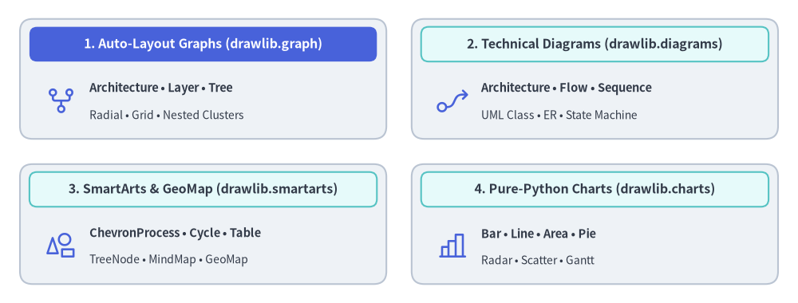

Drawlib Documentation
Drawlib is a pure-Python drawing library and documentation compiler crafted for "Illustration as Code" and "Illustrated Documentation as Code".
Designed from the ground up for modern software engineering and autonomous AI coding agents, Drawlib eliminates manual GUI drawing tools and brittle image files. Developers and LLM agents can create, version-control, and publish publication-grade architectural diagrams, flowcharts, data charts, and complete multi-page documentation sites entirely from declarative Python code.
Note — Built Autonomously with Drawlib & Gemini: Every page of prose and every illustration in this documentation was authored directly inside this Git repository using Drawlib and the Gemini Coding Agent (running in the Antigravity IDE). Human involvement was limited to high-level prompts—all document structure, technical explanations, and diagram designs were planned, coded, and visually verified autonomously by Gemini.

Source Code
from __future__ import annotations
import os
from drawlib.anim import Animation
from drawlib.canvas import save, setup
from drawlib.icons import ai, gcp, phosphor
from drawlib.images import image
from drawlib.lines import line, lines_curved
from drawlib.shapes import circle, rectangle
from drawlib.styles import Styles
from drawlib.text import text
# 16:9 widescreen canvas (128 x 72)
W = 128
H = 72
LOGO_PATH = "_assets/logo_transparent.png"
STYLE_TITLE = Styles.DarkBold.patch(text_size=16.0, halign="left")
STYLE_BODY = Styles.Dark.patch(text_size=15.0, halign="left")
# Container style
CONTAINER_STYLE = Styles.Neutral.patch(
shape_fill_color=(250, 252, 255),
shape_line_color=(185, 200, 218),
shape_line_width=1.4,
)
def draw_user_avatar(xy: tuple[float, float], radius: float = 5.0) -> None:
"""Draw clean circular User avatar badge."""
circle(
xy,
radius=radius,
style=Styles.Neutral.patch(
shape_fill_color=(245, 248, 252),
shape_line_color=(100, 115, 130),
shape_line_width=1.6,
),
)
phosphor.user(xy, width=radius * 1.25, style=Styles.Dark)
def draw_gemini_avatar(xy: tuple[float, float], radius: float = 5.0) -> None:
"""Draw clean circular Gemini avatar badge with official Gemini icon."""
circle(
xy,
radius=radius,
style=Styles.Neutral.patch(
shape_fill_color=(248, 250, 255),
shape_line_color=(100, 115, 130),
shape_line_width=1.6,
),
)
ai.gemini(xy, width=radius * 1.45, style=Styles.Neutral)
def draw_git_repo_container(show_items: bool = False) -> None:
"""Draw Git Repository container box, title, and optional child items."""
cx, cy, w, h = 44.0, 19.0, 58.0, 24.0
# 1. Outer box
rectangle((cx, cy), width=w, height=h, style=CONTAINER_STYLE)
# 2. Header title
phosphor.git_branch((cx - w / 2 + 4.5, cy + h / 2 - 3.2), width=4.5, style=Styles.Dark)
text((cx - w / 2 + 8.0, cy + h / 2 - 3.2), "Git Repository", style=Styles.DarkBold.patch(text_size=11.5, halign="left"))
# 3. Inner items (borderless)
if show_items:
repo_items = [
("Code", "file_code"),
("Docs", "file_text"),
("Config", "gear"),
("etc.", "dots_three"),
]
xs = [24.0, 37.5, 51.0, 64.5]
for (label, icon_name), ix in zip(repo_items, xs):
if icon_name == "dots_three":
phosphor.dots_three((ix, cy - 1.0), width=6.0, style=Styles.Neutral)
else:
icon_func = getattr(phosphor, icon_name)
icon_func((ix, cy + 1.5), width=7.5, style=Styles.Dark)
text((ix, cy - 6.5), label, style=Styles.Dark.patch(text_size=10.5, halign="center"))
def draw_ext_resources_container(show_items: bool = False) -> None:
"""Draw External Resources container box, title, and optional child items."""
cx, cy, w, h = 96.0, 19.0, 44.0, 24.0
# 1. Outer box
rectangle((cx, cy), width=w, height=h, style=CONTAINER_STYLE)
# 2. Header title
phosphor.cloud((cx - w / 2 + 4.5, cy + h / 2 - 3.2), width=4.5, style=Styles.PrimaryFlat)
text((cx - w / 2 + 8.0, cy + h / 2 - 3.2), "External Resources", style=Styles.DarkBold.patch(text_size=11.5, halign="left"))
# 3. Inner items (borderless)
if show_items:
ext_items = [
("Internet", "globe"),
("Drive", "google_drive_logo"),
("etc.", "dots_three"),
]
xs = [82.5, 96.0, 109.5]
for (label, icon_name), ix in zip(ext_items, xs):
if icon_name == "dots_three":
phosphor.dots_three((ix, cy - 1.0), width=6.0, style=Styles.Neutral)
else:
icon_func = getattr(phosphor, icon_name)
icon_style = Styles.PrimaryFlat if icon_name == "globe" else Styles.Dark
icon_func((ix, cy + 1.5), width=7.5, style=icon_style)
text((ix, cy - 6.5), label, style=Styles.Dark.patch(text_size=10.5, halign="center"))
def draw_cursor(x: float, y: float, height: float = 4.2) -> None:
"""Draw dedicated crisp cursor bar without altering text bounding boxes."""
rectangle(
(x, y),
width=0.6,
height=height,
style=Styles.Neutral.patch(shape_fill_color=(50, 60, 75), shape_line_width=0),
)
def add_page_1(anim: Animation) -> None:
"""Page 1: User prompt with avatar and typewriter typing."""
icon_xy = (16.0, 42.0)
x = 27.0
y1 = 42.0
y2 = 33.0
l1_full = "Hi Gemini!"
l2_full = "Please create Architecture Doc with drawlib."
l1_steps = [
("Hi ", 31.8),
("Hi Gem", 37.7),
("Hi Gemini", 41.3),
("Hi Gemini!", 42.1),
]
# 1. Type Line 1 ("Hi Gemini!")
for chunk, cur_x in l1_steps:
with anim.frame(duration=0.11):
draw_user_avatar(icon_xy)
text((x, y1), chunk, style=STYLE_TITLE)
draw_cursor(cur_x, y1, height=4.5)
# Cursor blink before Line 2
with anim.frame(duration=0.18):
draw_user_avatar(icon_xy)
text((x, y1), l1_full, style=STYLE_TITLE)
with anim.frame(duration=0.18):
draw_user_avatar(icon_xy)
text((x, y1), l1_full, style=STYLE_TITLE)
draw_cursor(42.1, y1, height=4.5)
# 2. Type Line 2 ("Please create Architecture Doc with drawlib.")
l2_steps = [
("Please ", 37.1),
("Please create ", 45.7),
("Please create Arch", 50.7),
("Please create Architecture ", 61.8),
("Please create Architecture Doc ", 67.4),
("Please create Architecture Doc with ", 73.6),
("Please create Architecture Doc with draw", 79.4),
("Please create Architecture Doc with drawlib.", 83.2),
]
for chunk, cur_x in l2_steps:
with anim.frame(duration=0.09):
draw_user_avatar(icon_xy)
text((x, y1), l1_full, style=STYLE_TITLE)
text((x, y2), chunk, style=STYLE_BODY)
draw_cursor(cur_x, y2, height=4.2)
# 3. Read hold with cursor blinking
with anim.frame(duration=0.30):
draw_user_avatar(icon_xy)
text((x, y1), l1_full, style=STYLE_TITLE)
text((x, y2), l2_full, style=STYLE_BODY)
draw_cursor(83.2, y2, height=4.2)
with anim.frame(duration=0.25):
draw_user_avatar(icon_xy)
text((x, y1), l1_full, style=STYLE_TITLE)
text((x, y2), l2_full, style=STYLE_BODY)
with anim.frame(duration=0.30):
draw_user_avatar(icon_xy)
text((x, y1), l1_full, style=STYLE_TITLE)
text((x, y2), l2_full, style=STYLE_BODY)
draw_cursor(83.2, y2, height=4.2)
with anim.frame(duration=0.60):
draw_user_avatar(icon_xy)
text((x, y1), l1_full, style=STYLE_TITLE)
text((x, y2), l2_full, style=STYLE_BODY)
def add_page_2(anim: Animation) -> None:
"""Page 2: Gemini response with staggered disclosure of resources.
Steps:
1. Message typing ("Sure." -> "Let me check Repository & External Resources!")
2. Git Repository frame appears
3. Git Repository contents appear
4. External Resources frame appears
5. External Resources contents appear
"""
icon_xy = (16.0, 52.0)
x = 27.0
y1 = 52.0
y2 = 43.0
l1_full = "Sure."
l2_full = "Let me check Repository & External Resources!"
# -------------------------------------------------------------
# Step 1: Message typing
# -------------------------------------------------------------
with anim.frame(duration=0.12):
draw_gemini_avatar(icon_xy)
text((x, y1), "Su", style=STYLE_TITLE)
draw_cursor(31.1, y1, height=4.5)
with anim.frame(duration=0.15):
draw_gemini_avatar(icon_xy)
text((x, y1), l1_full, style=STYLE_TITLE)
draw_cursor(35.0, y1, height=4.5)
with anim.frame(duration=0.18):
draw_gemini_avatar(icon_xy)
text((x, y1), l1_full, style=STYLE_TITLE)
l2_steps = [
("Let me ", 37.3),
("Let me check ", 45.5),
("Let me check Repository ", 59.9),
("Let me check Repository & External ", 73.0),
("Let me check Repository & External Resources!", 86.2),
]
for chunk, cur_x in l2_steps:
with anim.frame(duration=0.10):
draw_gemini_avatar(icon_xy)
text((x, y1), l1_full, style=STYLE_TITLE)
text((x, y2), chunk, style=STYLE_BODY)
draw_cursor(cur_x, y2, height=4.2)
with anim.frame(duration=0.25):
draw_gemini_avatar(icon_xy)
text((x, y1), l1_full, style=STYLE_TITLE)
text((x, y2), l2_full, style=STYLE_BODY)
# -------------------------------------------------------------
# Step 2: Git Repository box & header appear
# -------------------------------------------------------------
with anim.frame(duration=0.35):
draw_gemini_avatar(icon_xy)
text((x, y1), l1_full, style=STYLE_TITLE)
text((x, y2), l2_full, style=STYLE_BODY)
draw_git_repo_container(show_items=False)
# -------------------------------------------------------------
# Step 3: Git Repository contents appear
# -------------------------------------------------------------
with anim.frame(duration=0.45):
draw_gemini_avatar(icon_xy)
text((x, y1), l1_full, style=STYLE_TITLE)
text((x, y2), l2_full, style=STYLE_BODY)
draw_git_repo_container(show_items=True)
# -------------------------------------------------------------
# Step 4: External Resources box & header appear
# -------------------------------------------------------------
with anim.frame(duration=0.35):
draw_gemini_avatar(icon_xy)
text((x, y1), l1_full, style=STYLE_TITLE)
text((x, y2), l2_full, style=STYLE_BODY)
draw_git_repo_container(show_items=True)
draw_ext_resources_container(show_items=False)
# -------------------------------------------------------------
# Step 5: External Resources contents appear (hold before P3)
# -------------------------------------------------------------
with anim.frame(duration=1.40):
draw_gemini_avatar(icon_xy)
text((x, y1), l1_full, style=STYLE_TITLE)
text((x, y2), l2_full, style=STYLE_BODY)
draw_git_repo_container(show_items=True)
draw_ext_resources_container(show_items=True)
def draw_outline_item(num: str, title: str, y: float) -> None:
"""Draw a clean numbered bullet item for Page 3."""
circle(
(30.0, y),
radius=3.4,
style=Styles.Neutral.patch(
shape_fill_color=(240, 246, 255),
shape_line_color=(190, 208, 230),
shape_line_width=1.4,
),
)
text((30.0, y), num, style=Styles.PrimaryBold.patch(text_size=12.0, halign="center"))
text((37.5, y), title, style=Styles.DarkBold.patch(text_size=14.5, halign="left"))
def draw_outline_continuation(y: float = 9.5) -> None:
"""Draw continuation dots below chapter 3."""
phosphor.dots_three_vertical((30.0, y), width=4.5, style=Styles.Primary)
text((37.5, y), "...", style=Styles.Dark.patch(text_size=16.0, halign="left", text_color=(120, 135, 155)))
def add_page_3(anim: Animation) -> None:
"""Page 3: Gemini proposes document outline.
Steps:
1. Message typing: "How about this structure?"
2. Item 1 appears: 1. Introduction
3. Item 2 appears: 2. Overview
4. Item 3 appears: 3. Architecture
5. Continuation appears: ...
Hold state.
"""
icon_xy = (16.0, 56.0)
x = 27.0
y_title = 56.0
l_full = "How about this structure?"
items = [
("1", "Introduction", 42.0),
("2", "Overview", 31.0),
("3", "Architecture", 20.0),
]
# Step 1: Type title message
t_steps = [
("How ", 35.3),
("How about ", 44.1),
("How about this ", 49.9),
("How about this structure?", 63.7),
]
for chunk, cur_x in t_steps:
with anim.frame(duration=0.10):
draw_gemini_avatar(icon_xy)
text((x, y_title), chunk, style=STYLE_TITLE)
draw_cursor(cur_x, y_title, height=4.5)
with anim.frame(duration=0.20):
draw_gemini_avatar(icon_xy)
text((x, y_title), l_full, style=STYLE_TITLE)
# Step 2: Item 1 appears
with anim.frame(duration=0.25):
draw_gemini_avatar(icon_xy)
text((x, y_title), l_full, style=STYLE_TITLE)
draw_outline_item(items[0][0], items[0][1], items[0][2])
# Step 3: Item 2 appears
with anim.frame(duration=0.25):
draw_gemini_avatar(icon_xy)
text((x, y_title), l_full, style=STYLE_TITLE)
draw_outline_item(items[0][0], items[0][1], items[0][2])
draw_outline_item(items[1][0], items[1][1], items[1][2])
# Step 4: Item 3 appears
with anim.frame(duration=0.25):
draw_gemini_avatar(icon_xy)
text((x, y_title), l_full, style=STYLE_TITLE)
for num, title, y in items:
draw_outline_item(num, title, y)
# Step 5: Continuation '...' appears
with anim.frame(duration=0.35):
draw_gemini_avatar(icon_xy)
text((x, y_title), l_full, style=STYLE_TITLE)
for num, title, y in items:
draw_outline_item(num, title, y)
draw_outline_continuation(y=9.5)
# Hold frame before Page 4 (hold for 1.4s)
with anim.frame(duration=1.40):
draw_gemini_avatar(icon_xy)
text((x, y_title), l_full, style=STYLE_TITLE)
for num, title, y in items:
draw_outline_item(num, title, y)
draw_outline_continuation(y=9.5)
def add_page_4(anim: Animation) -> None:
"""Page 4: User quick approval (LGTM)."""
icon_xy = (16.0, 42.0)
x = 27.0
y1 = 42.0
y2 = 33.0
l1_full = "LGTM."
l2_full = "Please go ahead!!"
# Type Line 1 ("LGTM.")
with anim.frame(duration=0.15):
draw_user_avatar(icon_xy)
text((x, y1), "LG", style=STYLE_TITLE)
draw_cursor(31.1, y1, height=4.5)
with anim.frame(duration=0.18):
draw_user_avatar(icon_xy)
text((x, y1), l1_full, style=STYLE_TITLE)
draw_cursor(36.3, y1, height=4.5)
# Type Line 2 ("Please go ahead!!")
l2_steps = [
("Please ", 37.1),
("Please go ahead", 48.0),
("Please go ahead!!", 49.8),
]
for chunk, cur_x in l2_steps:
with anim.frame(duration=0.10):
draw_user_avatar(icon_xy)
text((x, y1), l1_full, style=STYLE_TITLE)
text((x, y2), chunk, style=STYLE_BODY)
draw_cursor(cur_x, y2, height=4.2)
# Hold frame before Page 5 (1.3s)
with anim.frame(duration=1.30):
draw_user_avatar(icon_xy)
text((x, y1), l1_full, style=STYLE_TITLE)
text((x, y2), l2_full, style=STYLE_BODY)
def draw_subagent_cell(
col_x: float,
row_y: float,
agent_num: int,
show_status: bool = False,
card_mode: bool = True,
) -> None:
"""Draw a single subagent in the 3x3 grid."""
if card_mode:
rectangle(
(col_x, row_y),
width=35.0,
height=11.5,
style=Styles.Neutral.patch(
shape_fill_color=(250, 252, 255),
shape_line_color=(205, 218, 232),
shape_line_width=1.2,
),
)
# Subagent avatar badge
circle(
(col_x - 11.5, row_y),
radius=3.2,
style=Styles.Neutral.patch(
shape_fill_color=(242, 246, 255),
shape_line_color=(130, 150, 175),
shape_line_width=1.0,
),
)
ai.gemini((col_x - 11.5, row_y), width=4.6, style=Styles.Neutral)
# Label
text((col_x - 5.5, row_y + 1.2), f"Gemini {agent_num}", style=Styles.DarkBold.patch(text_size=10.0, halign="left"))
# Status message (Step 4)
if show_status:
text(
(col_x - 5.5, row_y - 2.8),
f"Writing Chapter {agent_num}...",
style=Styles.PrimaryBold.patch(text_size=8.8, halign="left"),
)
def add_page_5(anim: Animation) -> None:
"""Page 5: Orchestrator agent & 3x3 parallel subagents."""
orc_xy = (16.0, 60.0)
x = 27.0
y1 = 62.0
y2 = 54.0
l1_full = "Let's Split Task."
l2_full = "Deploying 9 parallel subagents for all chapters!"
grid_xs = [28.0, 68.0, 108.0]
grid_ys = [39.0, 24.5, 10.0]
# Step 1: Orchestrator agent appears
with anim.frame(duration=0.35):
draw_gemini_avatar(orc_xy)
# Step 2: Orchestrator agent judge (message)
with anim.frame(duration=0.12):
draw_gemini_avatar(orc_xy)
text((x, y1), "Let's |", style=STYLE_TITLE)
with anim.frame(duration=0.18):
draw_gemini_avatar(orc_xy)
text((x, y1), l1_full + " |", style=STYLE_TITLE)
with anim.frame(duration=0.35):
draw_gemini_avatar(orc_xy)
text((x, y1), l1_full, style=STYLE_TITLE)
text((x, y2), l2_full, style=STYLE_BODY)
with anim.frame(duration=0.30):
draw_gemini_avatar(orc_xy)
text((x, y1), l1_full, style=STYLE_TITLE)
text((x, y2), l2_full, style=STYLE_BODY)
# Step 3: Sub agents appear (3x3 grid without status yet)
with anim.frame(duration=0.45):
draw_gemini_avatar(orc_xy)
text((x, y1), l1_full, style=STYLE_TITLE)
text((x, y2), l2_full, style=STYLE_BODY)
ch = 1
for row_y in grid_ys:
for col_x in grid_xs:
draw_subagent_cell(col_x, row_y, ch, show_status=False)
ch += 1
# Step 4: Start sub agents (message appears for all 9)
with anim.frame(duration=0.40):
draw_gemini_avatar(orc_xy)
text((x, y1), l1_full, style=STYLE_TITLE)
text((x, y2), l2_full, style=STYLE_BODY)
ch = 1
for row_y in grid_ys:
for col_x in grid_xs:
draw_subagent_cell(col_x, row_y, ch, show_status=True)
ch += 1
# Hold frame before Page 6 (hold for 1.4s)
with anim.frame(duration=1.40):
draw_gemini_avatar(orc_xy)
text((x, y1), l1_full, style=STYLE_TITLE)
text((x, y2), l2_full, style=STYLE_BODY)
ch = 1
for row_y in grid_ys:
for col_x in grid_xs:
draw_subagent_cell(col_x, row_y, ch, show_status=True)
ch += 1
def draw_p6_markdown_container(step: int = 3) -> None:
"""Draw the Drawlib Markdown file structure on Page 6 with progressive steps:
step 0: Outer container only
step 1: Top text block
step 2: Middle Drawlib code block
step 3: Bottom text block
"""
header_x = 83.0
text((header_x, 64.0), "Drawlib Markdown File", style=Styles.DarkBold.patch(text_size=13.5, halign="center"))
text(
(header_x, 58.0),
"(Both Text and Image Code exist in same context)",
style=Styles.Dark.patch(text_size=10.0, halign="center", text_color=(100, 115, 135)),
)
f_cx, f_cy, f_w, f_h = 83.0, 29.0, 74.0, 50.0
# Outer file box
rectangle(
(f_cx, f_cy),
width=f_w,
height=f_h,
style=Styles.Neutral.patch(
shape_fill_color=(252, 253, 255),
shape_line_color=(185, 200, 220),
shape_line_width=1.4,
),
)
# 1. Step 1: Top Markdown block
if step >= 1:
rectangle(
(f_cx, 47.0),
width=64.0,
height=8.5,
style=Styles.Neutral.patch(
shape_fill_color=(243, 246, 251),
shape_line_color=(210, 222, 236),
shape_line_width=1.0,
),
)
text((f_cx, 47.0), "Markdown Text", style=Styles.DarkBold.patch(text_size=11.0, halign="center"))
# 2. Step 2: Middle Python Drawlib Code block
m_y = 29.0
if step >= 2:
rectangle(
(f_cx, m_y),
width=64.0,
height=20.5,
style=Styles.Neutral.patch(
shape_fill_color=(235, 244, 255),
shape_line_color=(140, 180, 225),
shape_line_width=1.4,
),
)
text((57.0, m_y + 4.5), "Python", style=Styles.PrimaryBold.patch(text_size=11.0, halign="left"))
text((57.0, m_y), "Drawlib", style=Styles.PrimaryBold.patch(text_size=11.0, halign="left"))
text((57.0, m_y - 4.5), "Code", style=Styles.PrimaryBold.patch(text_size=11.0, halign="left"))
# Right inside: Mini diagram matching user PDF (3 nodes in a triangle)
from drawlib.lines import line
n1 = (99.0, m_y + 4.8)
n2 = (91.0, m_y - 4.5)
n3 = (107.0, m_y - 4.5)
line(n1, n2, style=Styles.Neutral.patch(line_color=(120, 150, 185), line_width=1.5))
line(n1, n3, style=Styles.Neutral.patch(line_color=(120, 150, 185), line_width=1.5))
line(n2, n3, style=Styles.Neutral.patch(line_color=(120, 150, 185), line_width=1.5))
for pt in [n1, n2, n3]:
circle(
pt,
radius=3.2,
style=Styles.Neutral.patch(
shape_fill_color=(255, 255, 255),
shape_line_color=(80, 120, 175),
shape_line_width=1.5,
),
)
# 3. Step 3: Bottom Markdown block
if step >= 3:
rectangle(
(f_cx, 11.0),
width=64.0,
height=8.5,
style=Styles.Neutral.patch(
shape_fill_color=(243, 246, 251),
shape_line_color=(210, 222, 236),
shape_line_width=1.0,
),
)
text((f_cx, 11.0), "Markdown Text", style=Styles.DarkBold.patch(text_size=11.0, halign="center"))
def add_page_6(anim: Animation) -> None:
"""Page 6: Drawlib Markdown File explanation (Text + Image code in same context).
Deliberate 3-step sequence (slowed down for clear legibility):
1. Top Markdown text appears
2. Middle Drawlib code + diagram appears
3. Bottom Markdown text appears
Hold state.
"""
sa_x, sa_y = 21.0, 48.0
# Step 0: Gemini 1 card & empty file frame appear
with anim.frame(duration=0.45):
draw_subagent_cell(sa_x, sa_y, 1, show_status=True, card_mode=True)
draw_p6_markdown_container(step=0)
# Step 1: Top Markdown text block appears
with anim.frame(duration=1.40):
draw_subagent_cell(sa_x, sa_y, 1, show_status=True, card_mode=True)
draw_p6_markdown_container(step=1)
# Step 2: Middle Python Drawlib Code block appears
with anim.frame(duration=1.80):
draw_subagent_cell(sa_x, sa_y, 1, show_status=True, card_mode=True)
draw_p6_markdown_container(step=2)
# Step 3: Bottom Markdown text block appears
with anim.frame(duration=1.40):
draw_subagent_cell(sa_x, sa_y, 1, show_status=True, card_mode=True)
draw_p6_markdown_container(step=3)
# Hold complete frame before Page 7 (hold for 2.2s)
with anim.frame(duration=2.20):
draw_subagent_cell(sa_x, sa_y, 1, show_status=True, card_mode=True)
draw_p6_markdown_container(step=3)
def draw_p7_mini_diagram(cx: float, cy: float, radius: float = 2.2, spread: float = 5.2) -> None:
"""Draw the 3-node connected triangle diagram for Page 7."""
from drawlib.lines import line
n1 = (cx, cy + spread * 0.7)
n2 = (cx - spread, cy - spread * 0.55)
n3 = (cx + spread, cy - spread * 0.55)
line(n1, n2, style=Styles.Neutral.patch(line_color=(120, 150, 185), line_width=1.4))
line(n1, n3, style=Styles.Neutral.patch(line_color=(120, 150, 185), line_width=1.4))
line(n2, n3, style=Styles.Neutral.patch(line_color=(120, 150, 185), line_width=1.4))
for pt in [n1, n2, n3]:
circle(
pt,
radius=radius,
style=Styles.Neutral.patch(
shape_fill_color=(255, 255, 255),
shape_line_color=(80, 120, 175),
shape_line_width=1.4,
),
)
def draw_p7_fix_loop(step: int = 5) -> None:
"""Draw the Fix Loop conceptual diagram:
1. Header 'Drawlib Markdown File' above left container
2. Arrow pointing directly to '2. Review Image'
3. Arrow pointing directly to '3. Plan Fix'
4. Center: Gemini icon + 'AI Agent' text
5. Unified font sizes for steps 1..4 (text_size=11.5)
"""
from drawlib.lines import line
# 1. Left: Drawlib Markdown File Container & Header
f_cx, f_cy, f_w, f_h = 22.0, 32.5, 36.0, 53.0
# Header above the file box
text((f_cx, 63.5), "Drawlib Markdown File", style=Styles.DarkBold.patch(text_size=11.5, halign="center"))
rectangle(
(f_cx, f_cy),
width=f_w,
height=f_h,
style=Styles.Neutral.patch(
shape_fill_color=(252, 253, 255),
shape_line_color=(185, 200, 220),
shape_line_width=1.4,
),
)
# Top Markdown Text box
rectangle(
(f_cx, 49.5),
width=28.0,
height=9.0,
style=Styles.Neutral.patch(
shape_fill_color=(243, 246, 251),
shape_line_color=(210, 222, 236),
shape_line_width=1.0,
),
)
text((f_cx, 49.5), "Markdown Text", style=Styles.DarkBold.patch(text_size=10.0, halign="center"))
# Middle Python Drawlib Code box
m_y = 32.5
code_box_w = 28.0
code_box_h = 18.0
rectangle(
(f_cx, m_y),
width=code_box_w,
height=code_box_h,
style=Styles.Neutral.patch(
shape_fill_color=(235, 244, 255),
shape_line_color=(140, 180, 225),
shape_line_width=1.4,
),
)
text((f_cx - 11.5, m_y + 4.0), "Python", style=Styles.PrimaryBold.patch(text_size=8.5, halign="left"))
text((f_cx - 11.5, m_y), "Drawlib", style=Styles.PrimaryBold.patch(text_size=8.5, halign="left"))
text((f_cx - 11.5, m_y - 4.0), "Code", style=Styles.PrimaryBold.patch(text_size=8.5, halign="left"))
draw_p7_mini_diagram(f_cx + 6.0, m_y, radius=1.9, spread=4.2)
# Bottom Markdown Text box
rectangle(
(f_cx, 15.5),
width=28.0,
height=9.0,
style=Styles.Neutral.patch(
shape_fill_color=(243, 246, 251),
shape_line_color=(210, 222, 236),
shape_line_width=1.0,
),
)
text((f_cx, 15.5), "Markdown Text", style=Styles.DarkBold.patch(text_size=10.0, halign="center"))
ARROW_STYLE = Styles.Neutral.patch(line_color=(125, 145, 170), line_width=1.5)
STEP_LABEL_STYLE = Styles.DarkBold.patch(text_size=11.5, halign="center")
img_cx, img_cy = 78.0, 54.0
img_w, img_h = 24.0, 16.0
rev_x, rev_y = 108.0, 32.5
plan_x, plan_y = 78.0, 10.0
# Center: Gemini Icon + 'AI Agent' label (centered in loop at x=78.0)
gem_icon_x = 73.0
gem_y = 32.5
if step >= 1:
circle(
(gem_icon_x, gem_y),
radius=5.2,
style=Styles.Neutral.patch(
shape_fill_color=(248, 250, 255),
shape_line_color=(120, 140, 165),
shape_line_width=1.4,
),
)
ai.gemini((gem_icon_x, gem_y), width=7.8, style=Styles.Neutral)
text((gem_icon_x + 7.5, gem_y), "AI Agent", style=Styles.DarkBold.patch(text_size=11.5, halign="left"))
# 2. Top Right: Step 1 (1. Export Image -> Image File)
if step >= 2:
line((f_cx + code_box_w / 2 + 0.5, m_y + 4.5), (img_cx - img_w / 2 - 1.5, img_cy - 1.5), arrow_head="->", style=ARROW_STYLE)
# Shifted right to 53.0 with clean white background mask on line
lbl_x, lbl_y = 53.0, 46.5
rectangle(
(lbl_x, lbl_y),
width=18.0,
height=4.2,
style=Styles.Neutral.patch(shape_fill_color=(255, 255, 255), shape_line_width=0),
)
text((lbl_x, lbl_y), "1. Export Image", style=STEP_LABEL_STYLE)
text((img_cx, img_cy + img_h / 2 + 3.8), "Image File", style=Styles.DarkBold.patch(text_size=12.0, halign="center"))
rectangle(
(img_cx, img_cy),
width=img_w,
height=img_h,
style=Styles.Neutral.patch(
shape_fill_color=(235, 244, 255),
shape_line_color=(140, 180, 225),
shape_line_width=1.4,
),
)
draw_p7_mini_diagram(img_cx, img_cy, radius=2.4, spread=5.5)
# 3. Middle Right: Step 2 (2. Review Image)
if step >= 3:
# Arrow: Image File -> 2. Review Image
line((img_cx + img_w / 2, img_cy - 6.0), (rev_x - 5.0, rev_y + 4.0), arrow_head="->", style=ARROW_STYLE)
text((rev_x, rev_y), "2. Review Image", style=STEP_LABEL_STYLE)
# 4. Bottom: Step 3 (3. Plan Fix)
if step >= 4:
# Arrow: 2. Review Image -> 3. Plan Fix
line((rev_x - 7.0, rev_y - 4.5), (plan_x + 8.0, plan_y + 2.5), arrow_head="->", style=ARROW_STYLE)
text((plan_x, plan_y), "3. Plan Fix", style=STEP_LABEL_STYLE)
# 5. Return Arrow: Step 4 (4. Modify Markdown)
if step >= 5:
line((plan_x - 10.0, plan_y + 1.0), (f_cx + code_box_w / 2 + 0.5, m_y - code_box_h / 2), arrow_head="->", style=ARROW_STYLE)
text((53.0, 24.5), "4. Modify Markdown", style=STEP_LABEL_STYLE)
def add_page_7(anim: Animation) -> None:
"""Page 7: Autonomous Visual Fix Loop conceptual diagram."""
# Step 1: File & Gemini center icon appear
with anim.frame(duration=0.50):
draw_p7_fix_loop(step=1)
# Step 2: '1. Export Image' & 'Image File' appear
with anim.frame(duration=1.30):
draw_p7_fix_loop(step=2)
# Step 3: '2. Review Image' appears
with anim.frame(duration=1.10):
draw_p7_fix_loop(step=3)
# Step 4: '3. Plan Fix' appears
with anim.frame(duration=1.10):
draw_p7_fix_loop(step=4)
# Step 5: '4. Modify Markdown' returns to Code (Full Loop completed!)
with anim.frame(duration=1.80):
draw_p7_fix_loop(step=5)
# Hold state for viewing the complete loop (2.2s before Page 8)
with anim.frame(duration=2.20):
draw_p7_fix_loop(step=5)
def draw_p9_gcp_node(
cx: float,
cy: float,
title: str,
icon_name: str,
w: float = 19.0,
h: float = 14.0,
card_style=Styles.Neutral,
danger: bool = False,
) -> None:
"""Draw a clean Google Cloud Architecture node with official GCP icon."""
if danger:
style = Styles.DangerNeutral.patch(
shape_fill_color=(255, 242, 242),
shape_line_color=(235, 100, 100),
shape_line_width=1.4,
shape_r=1.5,
)
title_style = Styles.DangerBold.patch(text_size=9.2, halign="center")
else:
style = card_style.patch(
shape_fill_color=(254, 255, 255),
shape_line_color=(180, 200, 220),
shape_line_width=1.2,
shape_r=1.5,
)
title_style = Styles.DarkBold.patch(text_size=9.2, halign="center")
rectangle((cx, cy), width=w, height=h, style=style)
icon_func = getattr(gcp, icon_name)
icon_func((cx, cy + 2.5), width=5.5, style=Styles.Neutral)
text((cx, cy - 3.8), title, style=title_style)
def draw_p9_client_node(
cx: float,
cy: float,
w: float = 14.0,
h: float = 14.0,
danger: bool = False,
) -> None:
"""Draw Client node with Phosphor user icon."""
if danger:
style = Styles.DangerNeutral.patch(
shape_fill_color=(255, 242, 242),
shape_line_color=(235, 100, 100),
shape_line_width=1.4,
shape_r=1.5,
)
title_style = Styles.DangerBold.patch(text_size=9.5, halign="center")
else:
style = Styles.Neutral.patch(
shape_fill_color=(254, 255, 255),
shape_line_color=(180, 200, 220),
shape_line_width=1.2,
shape_r=1.5,
)
title_style = Styles.DarkBold.patch(text_size=9.5, halign="center")
rectangle((cx, cy), width=w, height=h, style=style)
phosphor.user((cx, cy + 2.5), width=5.0, style=Styles.Dark)
text((cx, cy - 3.8), "Client", style=title_style)
def draw_p9_frame_defect() -> None:
"""Page 9 Frame 1: Spacing and Overlap defects detected."""
# Top Warning Banner
rectangle((64.0, 64.0), width=68.0, height=5.5, style=Styles.DangerFlat.patch(shape_r=1.2))
phosphor.warning_circle((34.0, 64.0), width=3.2, style=Styles.White)
text(
(37.0, 64.0),
"Layout defect: Client gap too tight & Cloud Run overlap",
style=Styles.WhiteBold.patch(text_size=9.8, halign="left"),
)
# Defect: Client is way too close to Load Balancer! (Client right=29.0; LB left=31.5 -> gap only 2.5 units!)
client_x = 22.0
lb_x = 42.0
draw_p9_client_node(client_x, 35.0, w=14.0, h=14.0, danger=True)
# Cramped tight arrow (gap 2.5 units)
line((client_x + 7.0, 35.0), (lb_x - 10.5, 35.0), arrow_head="->", style=Styles.DangerBold)
# Load Balancer
draw_p9_gcp_node(lb_x, 35.0, "Cloud Load Balancing", "cloud_load_balancing", w=21.0, h=14.0)
# Defect: Cloud Run overlaps with Load Balancer at x=54.0 (LB right=52.5)!
draw_p9_gcp_node(54.0, 35.0, "Cloud Run", "cloud_run", w=19.0, h=14.0, danger=True)
# Cloud SQL
draw_p9_gcp_node(92.0, 35.0, "Cloud SQL", "cloud_sql", w=19.0, h=14.0)
line((63.5, 35.0), (82.5, 35.0), arrow_head="->", style=Styles.DangerBold)
# Bottom AI Feedback bar
rectangle((64.0, 6.0), width=114.0, height=5.0, style=Styles.WarningNeutral.patch(shape_r=1.0))
text(
(64.0, 6.0),
"AI Agent Visual Feedback: Client gap too tight (2.5u) & Cloud Run overlap! Expanding to 10.5u balanced layout...",
style=Styles.WarningBold.patch(text_size=9.2, halign="center"),
)
def draw_p9_frame_repositioning() -> None:
"""Page 9 Frame 2: Expanding spacing and routing connectors in motion."""
# Top Repositioning Banner
rectangle((64.0, 64.0), width=62.0, height=5.5, style=Styles.PrimaryFlat.patch(shape_r=1.2))
phosphor.arrows_clockwise((37.0, 64.0), width=3.2, style=Styles.White)
text((40.0, 64.0), "Expanding Spacing & Routing Connectors...", style=Styles.WhiteBold.patch(text_size=9.8, halign="left"))
# Client moving to target x=18.0
client_x = 20.0
lb_x = 44.5
draw_p9_client_node(client_x, 35.0, w=14.0, h=14.0)
line((client_x + 7.0, 35.0), (lb_x - 10.5, 35.0), arrow_head="->", style=Styles.DarkBold)
# Load Balancer
draw_p9_gcp_node(lb_x, 35.0, "Cloud Load Balancing", "cloud_load_balancing", w=21.0, h=14.0)
# Cloud Run moving up-right to y=45.0
run_x = 73.0
draw_p9_gcp_node(run_x, 44.0, "Cloud Run", "cloud_run", w=19.0, h=14.0)
lines_curved([(lb_x + 10.5, 37.0), (61.5, 37.0), (61.5, 44.0), (run_x - 9.5, 44.0)], r=2.0, arrow_head="->", style=Styles.PrimaryBold)
# Cloud Functions branching down-right
draw_p9_gcp_node(run_x, 26.0, "Cloud Functions", "cloud_functions", w=19.0, h=14.0)
lines_curved([(lb_x + 10.5, 33.0), (61.5, 33.0), (61.5, 26.0), (run_x - 9.5, 26.0)], r=2.0, arrow_head="->", style=Styles.PrimaryBold)
# Cloud SQL
sql_x = 103.0
draw_p9_gcp_node(sql_x, 44.0, "Cloud SQL", "cloud_sql", w=19.0, h=14.0)
line((run_x + 9.5, 44.0), (sql_x - 9.5, 44.0), arrow_head="->", style=Styles.DarkBold)
# Cloud Storage
draw_p9_gcp_node(sql_x, 26.0, "Cloud Storage", "cloud_storage", w=19.0, h=14.0)
line((run_x + 9.5, 26.0), (sql_x - 9.5, 26.0), arrow_head="->", style=Styles.DarkBold)
# Bottom AI Feedback bar
rectangle((64.0, 6.0), width=114.0, height=5.0, style=Styles.PrimaryNeutral.patch(shape_r=1.0))
text(
(64.0, 6.0),
"Expanding Client-to-LB gap to 10.5 units, routing smooth fan-out connectors to Cloud Run & Functions...",
style=Styles.DarkBold.patch(text_size=9.2, halign="center"),
)
def draw_p9_frame_verified() -> None:
"""Page 9 Frame 3: Verified clean diagram with optimal 10.5-11.0 unit spacing across all columns."""
# Top Success Banner
rectangle((64.0, 64.0), width=62.0, height=5.5, style=Styles.SuccessFlat.patch(shape_r=1.2))
phosphor.check_circle((37.0, 64.0), width=3.2, style=Styles.White)
text((40.0, 64.0), "Layout Verified: Zero Overlaps & Optimal Spacing", style=Styles.WhiteBold.patch(text_size=9.8, halign="left"))
# Col 1: Client (cx=18.0, w=14.0 -> left=11.0, right=25.0)
client_x = 18.0
lb_x = 46.0
draw_p9_client_node(client_x, 35.0, w=14.0, h=14.0)
# Arrow 1: Client -> Load Balancer (length = 10.5 units: from 25.0 to 35.5)
line((client_x + 7.0, 35.0), (lb_x - 10.5, 35.0), arrow_head="->", style=Styles.DarkBold)
# Col 2: Load Balancer (cx=46.0, w=21.0 -> left=35.5, right=56.5)
draw_p9_gcp_node(lb_x, 35.0, "Cloud Load Balancing", "cloud_load_balancing", w=21.0, h=14.0)
# Col 3 Top: Cloud Run (cx=77.0, cy=46.0, w=19.0 -> left=67.5, right=86.5)
comp_x = 77.0
draw_p9_gcp_node(comp_x, 46.0, "Cloud Run", "cloud_run", w=19.0, h=14.0)
lines_curved([(lb_x + 10.5, 38.0), (62.0, 38.0), (62.0, 46.0), (comp_x - 9.5, 46.0)], r=2.5, arrow_head="->", style=Styles.DarkBold)
# Col 3 Bottom: Cloud Functions (cx=77.0, cy=24.0, w=19.0 -> left=67.5, right=86.5)
draw_p9_gcp_node(comp_x, 24.0, "Cloud Functions", "cloud_functions", w=19.0, h=14.0)
lines_curved([(lb_x + 10.5, 32.0), (62.0, 32.0), (62.0, 24.0), (comp_x - 9.5, 24.0)], r=2.5, arrow_head="->", style=Styles.DarkBold)
# Col 4 Top: Cloud SQL (cx=107.0, cy=46.0, w=19.0 -> left=97.5, right=116.5)
storage_x = 107.0
draw_p9_gcp_node(storage_x, 46.0, "Cloud SQL", "cloud_sql", w=19.0, h=14.0)
line((comp_x + 9.5, 46.0), (storage_x - 9.5, 46.0), arrow_head="->", style=Styles.DarkBold)
# Col 4 Bottom: Cloud Storage (cx=107.0, cy=24.0, w=19.0 -> left=97.5, right=116.5)
draw_p9_gcp_node(storage_x, 24.0, "Cloud Storage", "cloud_storage", w=19.0, h=14.0)
line((comp_x + 9.5, 24.0), (storage_x - 9.5, 24.0), arrow_head="->", style=Styles.DarkBold)
# Bottom Success Feedback bar
rectangle((64.0, 6.0), width=114.0, height=5.0, style=Styles.SuccessNeutral.patch(shape_r=1.0))
text(
(64.0, 6.0),
"Stage 2 Passed in 1.1s! Generous 10.5u spacing & balanced margins verified.",
style=Styles.SuccessBold.patch(text_size=9.2, halign="center"),
)
def add_page_8(anim: Animation) -> None:
"""Page 8: Autonomous Visual Self-Correction on Google Cloud Architecture diagram."""
# Frame 1: Spacing & overlap defects detected (1.8s)
with anim.frame(duration=1.80):
draw_p9_frame_defect()
# Frame 2: Repositioning & expanding spacing in motion (0.9s)
with anim.frame(duration=0.90):
draw_p9_frame_repositioning()
# Frame 3: Verified clean layout with optimal spacing (2.6s)
with anim.frame(duration=2.60):
draw_p9_frame_verified()
def draw_convergence_subagent_cell(
col_x: float,
row_y: float,
agent_num: int,
status: str = "writing",
) -> None:
"""Draw a single subagent cell with writing vs. completed state."""
if status == "completed":
card_style = Styles.SuccessNeutral.patch(
shape_fill_color=(248, 253, 248),
shape_line_color=(135, 195, 150),
shape_line_width=1.3,
)
badge_style = Styles.SuccessNeutral.patch(
shape_fill_color=(235, 248, 238),
shape_line_color=(120, 185, 135),
shape_line_width=1.0,
)
msg_style = Styles.SuccessBold.patch(text_size=8.8, halign="left")
status_text = f"Chapter {agent_num}: Completed"
else:
card_style = Styles.Neutral.patch(
shape_fill_color=(250, 252, 255),
shape_line_color=(205, 218, 232),
shape_line_width=1.2,
)
badge_style = Styles.Neutral.patch(
shape_fill_color=(242, 246, 255),
shape_line_color=(130, 150, 175),
shape_line_width=1.0,
)
msg_style = Styles.PrimaryBold.patch(text_size=8.8, halign="left")
status_text = f"Writing Chapter {agent_num}..."
# Outer card
rectangle((col_x, row_y), width=35.0, height=11.5, style=card_style)
# Subagent avatar badge
circle((col_x - 11.5, row_y), radius=3.2, style=badge_style)
ai.gemini((col_x - 11.5, row_y), width=4.6, style=Styles.Neutral)
# Agent label
text((col_x - 5.5, row_y + 1.2), f"Gemini {agent_num}", style=Styles.DarkBold.patch(text_size=10.0, halign="left"))
# Status message & icon
text((col_x - 5.5, row_y - 2.8), status_text, style=msg_style)
if status == "completed":
phosphor.check_circle((col_x + 13.5, row_y + 1.2), width=3.2, style=Styles.Success)
def draw_convergence_frame(completed_up_to: int) -> None:
"""Draw 3x3 grid with agents 1..completed_up_to marked as Completed."""
orc_xy = (16.0, 60.0)
x = 27.0
y1 = 62.0
y2 = 54.0
draw_gemini_avatar(orc_xy)
if completed_up_to >= 9:
title = "All 9 Chapters Verified!"
subtitle = "Zero layout collisions. Launching Drawlib multi-format build..."
title_style = Styles.SuccessBold.patch(text_size=14.0, halign="left")
else:
title = "Aggregating Subagent Outputs..."
subtitle = f"{completed_up_to}/9 chapters & diagrams verified by autonomous review..."
title_style = STYLE_TITLE
text((x, y1), title, style=title_style)
text((x, y2), subtitle, style=STYLE_BODY)
grid_xs = [28.0, 68.0, 108.0]
grid_ys = [39.0, 24.5, 10.0]
ch = 1
for row_y in grid_ys:
for col_x in grid_xs:
st = "completed" if ch <= completed_up_to else "writing"
draw_convergence_subagent_cell(col_x, row_y, ch, status=st)
ch += 1
def add_page_9(anim: Animation) -> None:
"""Page 9: 9 Subagents Sequential Completion (Convergence)."""
# Wave 1: Gemini 1 is verified (having just seen Gemini 1 in Page 8)
with anim.frame(duration=0.60):
draw_convergence_frame(completed_up_to=1)
# Wave 2: Gemini 1..4 complete
with anim.frame(duration=0.45):
draw_convergence_frame(completed_up_to=4)
# Wave 3: Gemini 1..7 complete
with anim.frame(duration=0.45):
draw_convergence_frame(completed_up_to=7)
# Wave 4: All 9 complete! Zero layout collisions, ready to build!
with anim.frame(duration=1.80):
draw_convergence_frame(completed_up_to=9)
def draw_p10_source_file(x: float, y: float, w: float, h: float) -> None:
"""Draw source Drawlib Markdown file icon."""
rectangle(
(x, y),
width=w,
height=h,
style=Styles.Neutral.patch(
shape_fill_color=(252, 253, 255),
shape_line_color=(165, 185, 210),
shape_line_width=1.6,
),
)
text((x, y + 8.5), "Drawlib", style=Styles.DarkBold.patch(text_size=11.5, halign="center"))
text((x, y + 4.0), "Markdown", style=Styles.DarkBold.patch(text_size=11.5, halign="center"))
rectangle(
(x, y - 6.0),
width=13.0,
height=10.0,
style=Styles.Neutral.patch(
shape_fill_color=(230, 242, 255),
shape_line_color=(120, 165, 215),
shape_line_width=1.2,
),
)
phosphor.image((x, y - 6.0), width=5.0, style=Styles.Primary)
def add_page_10(anim: Animation) -> None:
"""Page 10: Final Build & Multi-format Output (Markdown, HTML, PDF)."""
src_x, src_y = 18.0, 36.0
src_w, src_h = 24.0, 32.0
start_x = src_x + src_w / 2
target_x = 76.0
top_y = 56.0
mid_y = 36.0
bot_y = 16.0
branch_x = start_x + 6.0
ARROW_STYLE = Styles.Neutral.patch(line_color=(140, 160, 185), line_width=1.6)
box_w, box_h = 46.0, 15.0
box_cx = target_x + box_w / 2
from drawlib.lines import line
def draw_branches(show_targets: bool = True) -> None:
# Branch trunk
line((start_x, mid_y), (branch_x, mid_y), style=ARROW_STYLE)
line((branch_x, bot_y), (branch_x, top_y), style=ARROW_STYLE)
# 1. Top Arrow & Label
line((branch_x, top_y), (target_x - 1.5, top_y), style=ARROW_STYLE, arrow_head="->")
text(((branch_x + target_x) / 2, top_y + 3.8), "Build Markdown", style=Styles.DarkBold.patch(text_size=11.0, halign="center"))
# 2. Middle Arrow & Label
line((branch_x, mid_y), (target_x - 1.5, mid_y), style=ARROW_STYLE, arrow_head="->")
text(((branch_x + target_x) / 2, mid_y + 3.8), "Build HTML", style=Styles.DarkBold.patch(text_size=11.0, halign="center"))
# 3. Bottom Arrow & Label
line((branch_x, bot_y), (target_x - 1.5, bot_y), style=ARROW_STYLE, arrow_head="->")
text(((branch_x + target_x) / 2, bot_y + 3.8), "Build PDF", style=Styles.DarkBold.patch(text_size=11.0, halign="center"))
if show_targets:
# 1. Top Output: Standard Markdown + Image
rectangle(
(box_cx, top_y),
width=box_w,
height=box_h,
style=Styles.Neutral.patch(
shape_fill_color=(254, 254, 255),
shape_line_color=(180, 195, 215),
shape_line_width=1.2,
shape_line_style="dashed",
),
)
rectangle(
(box_cx - 9.0, top_y),
width=24.0,
height=10.5,
style=Styles.Neutral.patch(
shape_fill_color=(245, 248, 252),
shape_line_color=(205, 218, 232),
shape_line_width=1.0,
),
)
text((box_cx - 9.0, top_y + 1.8), "Standard", style=Styles.DarkBold.patch(text_size=9.5, halign="center"))
text((box_cx - 9.0, top_y - 2.0), "Markdown", style=Styles.DarkBold.patch(text_size=9.5, halign="center"))
rectangle(
(box_cx + 14.0, top_y),
width=13.0,
height=10.5,
style=Styles.Neutral.patch(
shape_fill_color=(232, 243, 255),
shape_line_color=(130, 170, 220),
shape_line_width=1.2,
),
)
text((box_cx + 14.0, top_y), "Image", style=Styles.PrimaryBold.patch(text_size=9.5, halign="center"))
# 2. Middle Output: HTML + Image
rectangle(
(box_cx, mid_y),
width=box_w,
height=box_h,
style=Styles.Neutral.patch(
shape_fill_color=(254, 254, 255),
shape_line_color=(180, 195, 215),
shape_line_width=1.2,
shape_line_style="dashed",
),
)
rectangle(
(box_cx - 9.0, mid_y),
width=24.0,
height=10.5,
style=Styles.Neutral.patch(
shape_fill_color=(245, 248, 252),
shape_line_color=(205, 218, 232),
shape_line_width=1.0,
),
)
text((box_cx - 9.0, mid_y), "HTML", style=Styles.DarkBold.patch(text_size=11.0, halign="center"))
rectangle(
(box_cx + 14.0, mid_y),
width=13.0,
height=10.5,
style=Styles.Neutral.patch(
shape_fill_color=(232, 243, 255),
shape_line_color=(130, 170, 220),
shape_line_width=1.2,
),
)
text((box_cx + 14.0, mid_y), "Image", style=Styles.PrimaryBold.patch(text_size=9.5, halign="center"))
# 3. Bottom Output: PDF
pdf_w, pdf_h = 28.0, 15.0
pdf_cx = target_x + pdf_w / 2
rectangle(
(pdf_cx, bot_y),
width=pdf_w,
height=pdf_h,
style=Styles.Neutral.patch(
shape_fill_color=(245, 248, 252),
shape_line_color=(205, 218, 232),
shape_line_width=1.2,
),
)
text((pdf_cx - 4.5, bot_y), "PDF", style=Styles.DarkBold.patch(text_size=12.0, halign="center"))
rectangle(
(pdf_cx + 7.5, bot_y),
width=7.5,
height=8.5,
style=Styles.Neutral.patch(
shape_fill_color=(232, 243, 255),
shape_line_color=(130, 170, 220),
shape_line_width=1.0,
),
)
phosphor.image((pdf_cx + 7.5, bot_y), width=4.0, style=Styles.Primary)
# Step 1: Source appears
with anim.frame(duration=0.35):
draw_p10_source_file(src_x, src_y, src_w, src_h)
# Step 2: Branches extend
with anim.frame(duration=0.45):
draw_p10_source_file(src_x, src_y, src_w, src_h)
draw_branches(show_targets=False)
# Step 3: Targets appear
with anim.frame(duration=0.45):
draw_p10_source_file(src_x, src_y, src_w, src_h)
draw_branches(show_targets=True)
# Hold state for Page 10 (1.8s transition to Page 11)
with anim.frame(duration=1.80):
draw_p10_source_file(src_x, src_y, src_w, src_h)
draw_branches(show_targets=True)
# =============================================================================
# Page 11: AI Inner Loop & Human Outer Loop (Grand Finale Spinning Animation)
# =============================================================================
P11_INNER_CX, P11_INNER_CY = 60.5, 40.0
P11_INNER_W, P11_INNER_H = 76.0, 59.0
P11_TIER1_Y = 41.0
P11_TIER2_Y = 20.0
P11_DEV_CX, P11_DEV_CY = 11.0, P11_TIER1_Y
P11_DEV_W, P11_DEV_H = 15.0, 18.0
P11_AGENT_CX, P11_AGENT_CY = 40.0, P11_TIER1_Y
P11_AGENT_W, P11_AGENT_H = 31.0, 16.0
P11_PREV_CX, P11_PREV_CY = 80.0, 43.0
P11_PREV_W, P11_PREV_H = 31.0, 20.0
P11_INSP_CX, P11_INSP_CY = 80.0, P11_TIER2_Y
P11_INSP_W, P11_INSP_H = 31.0, 14.5
P11_PUB_CX, P11_PUB_CY = 114.0, P11_TIER2_Y
P11_PUB_W, P11_PUB_H = 21.0, 18.0
P11_CTX_CY = 57.5
P11_CTX_H = 8.6
P11_SPEC_CX, P11_SPEC_W = 32.0, 14.5
P11_REPO_CX, P11_REPO_W = 48.0, 14.5
P11_LOOP_Y = 4.5
P11_REPAIR_X = 40.0
P11_MUTED_ARROW_COLOR = (195, 210, 228)
P11_MUTED_ARROW_WIDTH = 1.2
P11_MUTED_TEXT_COLOR = (140, 155, 175)
def draw_p11_loop_state(step: str = "idle") -> None:
"""Draw Page 11 with high-contrast active highlights."""
is_all = step == "complete"
# 1. Outer Container
is_inner = step in ("export_1", "inspect_1", "repair", "export_2", "inspect_2", "pass") or is_all
rectangle(
(P11_INNER_CX, P11_INNER_CY),
width=P11_INNER_W,
height=P11_INNER_H,
style=Styles.MutedDashed.patch(
shape_r=2.5,
shape_line_width=1.4 if is_inner else 1.1,
shape_line_color=(105, 155, 220) if is_inner else (185, 200, 220),
),
)
header_x, header_y = 60.5, 66.5
phosphor.arrows_clockwise((header_x - 28.0, header_y), width=3.8, style=Styles.Primary)
text(
(header_x, header_y),
"AI Inner Loop (Autonomous Visual Self-Correction)",
style=Styles.PrimaryBold.patch(text_size=9.8, halign="center", text_color=(45, 95, 205) if is_inner else (90, 115, 145)),
)
# 2. Context Cards (Specs & Repo)
act_ctx = step in ("context",) or is_all
ctx_border = (80, 145, 230) if act_ctx else (195, 210, 230)
ctx_fill = (235, 245, 255) if act_ctx else (248, 251, 255)
rectangle(
(P11_SPEC_CX, P11_CTX_CY),
width=P11_SPEC_W,
height=P11_CTX_H,
style=Styles.PrimaryNeutral.patch(
shape_fill_color=ctx_fill,
shape_line_color=ctx_border,
shape_line_width=1.4 if act_ctx else 1.0,
shape_r=1.5,
),
)
phosphor.book_open_text((P11_SPEC_CX - 4.4, P11_CTX_CY + 1.5), width=3.2, style=Styles.Primary)
text((P11_SPEC_CX + 1.2, P11_CTX_CY + 1.5), "Specs & Rules", style=Styles.DarkBold.patch(text_size=7.4, halign="center"))
text((P11_SPEC_CX, P11_CTX_CY - 2.3), "drawlib rules show", style=Styles.PrimaryBold.patch(text_size=6.8, halign="center"))
rectangle(
(P11_REPO_CX, P11_CTX_CY),
width=P11_REPO_W,
height=P11_CTX_H,
style=Styles.PrimaryNeutral.patch(
shape_fill_color=ctx_fill,
shape_line_color=ctx_border,
shape_line_width=1.4 if act_ctx else 1.0,
shape_r=1.5,
),
)
phosphor.file_code((P11_REPO_CX - 4.4, P11_CTX_CY + 1.5), width=3.2, style=Styles.Primary)
text((P11_REPO_CX + 1.2, P11_CTX_CY + 1.5), "Repo Code", style=Styles.DarkBold.patch(text_size=7.4, halign="center"))
text((P11_REPO_CX, P11_CTX_CY - 2.3), "Source & Schemas", style=Styles.Dark.patch(text_size=6.8, halign="center", text_color=(90, 110, 130)))
if act_ctx:
ctx_arrow = Styles.PrimaryBold.patch(line_width=2.5, line_color=(35, 95, 215))
else:
ctx_arrow = Styles.Neutral.patch(line_width=P11_MUTED_ARROW_WIDTH, line_color=P11_MUTED_ARROW_COLOR)
line((P11_SPEC_CX, P11_CTX_CY - P11_CTX_H / 2), (P11_SPEC_CX, P11_AGENT_CY + P11_AGENT_H / 2), arrow_head="->", style=ctx_arrow)
line((P11_REPO_CX, P11_CTX_CY - P11_CTX_H / 2), (P11_REPO_CX, P11_AGENT_CY + P11_AGENT_H / 2), arrow_head="->", style=ctx_arrow)
# 3. Developer Card
act_dev = step in ("prompt", "outer_loop") or is_all
rectangle(
(P11_DEV_CX, P11_DEV_CY),
width=P11_DEV_W,
height=P11_DEV_H,
style=Styles.Neutral.patch(
shape_fill_color=(242, 248, 255) if act_dev else (252, 253, 255),
shape_line_color=(75, 135, 215) if act_dev else (195, 208, 225),
shape_line_width=1.6 if act_dev else 1.2,
shape_r=2.0,
),
)
phosphor.user((P11_DEV_CX, P11_DEV_CY + 4.2), width=5.2, style=Styles.Dark)
text((P11_DEV_CX, P11_DEV_CY - 1.5), "Developer", style=Styles.DarkBold.patch(text_size=9.5, halign="center"))
text(
(P11_DEV_CX, P11_DEV_CY - 5.8),
"High-Level\nGoal / Prompt",
style=Styles.Dark.patch(text_size=7.2, halign="center", text_color=(70, 95, 120) if act_dev else (115, 130, 145)),
)
act_prompt = step in ("prompt",) or is_all
if act_prompt:
prompt_arrow = Styles.PrimaryBold.patch(line_width=2.8, line_color=(40, 95, 215))
else:
prompt_arrow = Styles.Neutral.patch(line_width=P11_MUTED_ARROW_WIDTH, line_color=P11_MUTED_ARROW_COLOR)
line((P11_DEV_CX + P11_DEV_W / 2, P11_DEV_CY), (P11_AGENT_CX - P11_AGENT_W / 2, P11_DEV_CY), arrow_head="->", style=prompt_arrow)
# 4. AI Coding Agent
act_agent = step in ("prompt", "context", "export_1", "repair", "export_2") or is_all
agent_fill = (45, 95, 210) if act_agent else (65, 110, 200)
agent_border = (25, 70, 180) if act_agent else (50, 90, 175)
rectangle(
(P11_AGENT_CX, P11_AGENT_CY),
width=P11_AGENT_W,
height=P11_AGENT_H,
style=Styles.PrimaryFlat.patch(
shape_fill_color=agent_fill,
shape_line_color=agent_border,
shape_line_width=1.8 if act_agent else 1.2,
shape_r=2.2,
),
)
gem_badge_x = P11_AGENT_CX - 9.0
circle(
(gem_badge_x, P11_AGENT_CY),
radius=4.5,
style=Styles.Neutral.patch(shape_fill_color=(255, 255, 255), shape_line_width=0),
)
ai.gemini((gem_badge_x, P11_AGENT_CY), width=6.6, style=Styles.Neutral)
text((P11_AGENT_CX - 2.5, P11_AGENT_CY + 2.5), "AI Coding Agent", style=Styles.WhiteBold.patch(text_size=9.6, halign="left"))
text((P11_AGENT_CX - 2.5, P11_AGENT_CY - 2.8), "Write / Fix Python\n& Markdown Code", style=Styles.White.patch(text_size=7.5, halign="left"))
# 5. Render Preview
act_prev = step in ("export_1", "inspect_1", "export_2", "inspect_2") or is_all
rectangle(
(P11_PREV_CX, P11_PREV_CY),
width=P11_PREV_W,
height=P11_PREV_H,
style=Styles.Neutral.patch(
shape_fill_color=(244, 250, 255) if act_prev else (252, 253, 255),
shape_line_color=(65, 135, 220) if act_prev else (195, 208, 225),
shape_line_width=1.8 if act_prev else 1.2,
shape_r=2.0,
),
)
phosphor.grid_four((P11_PREV_CX - 9.5, P11_PREV_CY + 4.2), width=5.4, style=Styles.Primary)
text((P11_PREV_CX - 4.5, P11_PREV_CY + 5.5), "Render Preview", style=Styles.DarkBold.patch(text_size=9.4, halign="left"))
text((P11_PREV_CX - 4.5, P11_PREV_CY + 2.0), "drawlib show -g (Grid)", style=Styles.PrimaryBold.patch(text_size=7.4, halign="left"))
grid_cy = P11_PREV_CY - 4.2
rectangle(
(P11_PREV_CX, grid_cy),
width=25.0,
height=6.8,
style=Styles.Neutral.patch(
shape_fill_color=(235, 244, 253) if act_prev else (245, 248, 252),
shape_line_color=(175, 205, 235) if act_prev else (215, 228, 242),
shape_line_width=0.8,
),
)
line((P11_PREV_CX - 12.5, grid_cy), (P11_PREV_CX + 12.5, grid_cy), style=Styles.Muted.patch(line_width=0.6))
line((P11_PREV_CX - 6.0, grid_cy - 3.4), (P11_PREV_CX - 6.0, grid_cy + 3.4), style=Styles.Muted.patch(line_width=0.6))
line((P11_PREV_CX + 6.0, grid_cy - 3.4), (P11_PREV_CX + 6.0, grid_cy + 3.4), style=Styles.Muted.patch(line_width=0.6))
circle((P11_PREV_CX - 6.0, grid_cy), radius=1.3, style=Styles.Primary)
circle((P11_PREV_CX + 6.0, grid_cy), radius=1.3, style=Styles.Success)
act_export = step in ("export_1", "export_2") or is_all
if act_export:
export_arrow = Styles.PrimaryBold.patch(line_width=3.0, line_color=(30, 95, 225))
export_text_color = (25, 85, 210)
else:
export_arrow = Styles.Neutral.patch(line_width=P11_MUTED_ARROW_WIDTH, line_color=P11_MUTED_ARROW_COLOR)
export_text_color = P11_MUTED_TEXT_COLOR
line((P11_AGENT_CX + P11_AGENT_W / 2, P11_TIER1_Y), (P11_PREV_CX - P11_PREV_W / 2, P11_TIER1_Y), arrow_head="->", style=export_arrow)
text(((P11_AGENT_CX + P11_AGENT_W / 2 + P11_PREV_CX - P11_PREV_W / 2) / 2, P11_TIER1_Y + 2.8), "Export", style=Styles.DarkBold.patch(text_size=7.6, halign="center", text_color=export_text_color))
# 6. Visual Inspection
act_insp = step in ("inspect_1", "repair", "inspect_2", "pass") or is_all
rectangle(
(P11_INSP_CX, P11_INSP_CY),
width=P11_INSP_W,
height=P11_INSP_H,
style=Styles.SecondaryNeutral.patch(
shape_fill_color=(235, 252, 252) if act_insp else (246, 253, 253),
shape_line_color=(40, 175, 185) if act_insp else (170, 205, 210),
shape_line_width=1.8 if act_insp else 1.2,
shape_r=2.0,
),
)
phosphor.eye((P11_INSP_CX - 9.5, P11_INSP_CY + 2.0), width=5.2, style=Styles.Secondary)
text((P11_INSP_CX - 4.5, P11_INSP_CY + 3.2), "Visual Inspection", style=Styles.DarkBold.patch(text_size=9.2, halign="left"))
text((P11_INSP_CX - 4.5, P11_INSP_CY - 0.2), "Multimodal Layout Check", style=Styles.SecondaryBold.patch(text_size=7.4, halign="left"))
text((P11_INSP_CX, P11_INSP_CY - 4.2), "Check overlaps, margins & style rules", style=Styles.Dark.patch(text_size=6.8, halign="center", text_color=(80, 105, 110) if act_insp else (115, 130, 135)))
act_inspect = step in ("inspect_1", "inspect_2") or is_all
if act_inspect:
inspect_arrow = Styles.SecondaryBold.patch(line_width=3.0, line_color=(15, 155, 165))
inspect_text_color = (15, 145, 155)
else:
inspect_arrow = Styles.Neutral.patch(line_width=P11_MUTED_ARROW_WIDTH, line_color=P11_MUTED_ARROW_COLOR)
inspect_text_color = P11_MUTED_TEXT_COLOR
line((P11_PREV_CX, P11_PREV_CY - P11_PREV_H / 2), (P11_INSP_CX, P11_INSP_CY + P11_INSP_H / 2), arrow_head="->", style=inspect_arrow)
text((P11_PREV_CX + 4.5, (P11_PREV_CY - P11_PREV_H / 2 + P11_INSP_CY + P11_INSP_H / 2) / 2), "Inspect", style=Styles.SecondaryBold.patch(text_size=7.4, halign="left", text_color=inspect_text_color))
# 7. Self-Repair Loop
act_repair = step in ("repair",) or is_all
if act_repair:
repair_arrow = Styles.WarningBold.patch(line_width=3.2, line_color=(245, 125, 10))
repair_pill_fill = (255, 242, 225)
repair_pill_border = (235, 125, 15)
repair_pill_width = 1.6
repair_text_color = (225, 105, 5)
else:
repair_arrow = Styles.Neutral.patch(line_width=P11_MUTED_ARROW_WIDTH, line_color=P11_MUTED_ARROW_COLOR)
repair_pill_fill = (255, 253, 248)
repair_pill_border = (225, 210, 185)
repair_pill_width = 0.9
repair_text_color = P11_MUTED_TEXT_COLOR
lines_curved(
[(P11_INSP_CX - P11_INSP_W / 2, P11_TIER2_Y), (P11_REPAIR_X, P11_TIER2_Y), (P11_REPAIR_X, P11_AGENT_CY - P11_AGENT_H / 2)],
r=2.5,
arrow_head="->",
style=repair_arrow,
)
repair_label_x = (P11_INSP_CX - P11_INSP_W / 2 + P11_REPAIR_X) / 2
rectangle(
(repair_label_x, P11_TIER2_Y),
width=18.0,
height=4.5,
style=Styles.Neutral.patch(
shape_fill_color=repair_pill_fill,
shape_line_color=repair_pill_border,
shape_line_width=repair_pill_width,
shape_r=1.5,
),
)
text((repair_label_x, P11_TIER2_Y), "Self-Repair Loop", style=Styles.WarningBold.patch(text_size=7.4 if act_repair else 7.2, halign="center", text_color=repair_text_color))
# 8. Pass ✓ & Published Docs
act_pass = step in ("pass", "outer_loop") or is_all
if act_pass:
pass_arrow = Styles.SuccessBold.patch(line_width=3.2, line_color=(30, 170, 65))
pass_text_color = (25, 155, 55)
else:
pass_arrow = Styles.Neutral.patch(line_width=P11_MUTED_ARROW_WIDTH, line_color=P11_MUTED_ARROW_COLOR)
pass_text_color = P11_MUTED_TEXT_COLOR
line((P11_INSP_CX + P11_INSP_W / 2, P11_TIER2_Y), (P11_PUB_CX - P11_PUB_W / 2, P11_TIER2_Y), arrow_head="->", style=pass_arrow)
text(((P11_INSP_CX + P11_INSP_W / 2 + P11_PUB_CX - P11_PUB_W / 2) / 2, P11_TIER2_Y + 2.8), "Pass ✓", style=Styles.SuccessBold.patch(text_size=9.0 if act_pass else 8.8, halign="center", text_color=pass_text_color))
rectangle(
(P11_PUB_CX, P11_PUB_CY),
width=P11_PUB_W,
height=P11_PUB_H,
style=Styles.SuccessNeutral.patch(
shape_fill_color=(238, 253, 238) if act_pass else (248, 253, 248),
shape_line_color=(45, 175, 80) if act_pass else (175, 205, 180),
shape_line_width=1.8 if act_pass else 1.2,
shape_r=2.0,
),
)
phosphor.seal_check((P11_PUB_CX, P11_PUB_CY + 4.2), width=5.6, style=Styles.Success.patch(icon_style="fill"))
text((P11_PUB_CX, P11_PUB_CY - 1.5), "Published Docs", style=Styles.DarkBold.patch(text_size=9.2, halign="center"))
text(
(P11_PUB_CX, P11_PUB_CY - 5.8),
"HTML Site / PDF /\nMarkdown / Slides",
style=Styles.Dark.patch(text_size=7.2, halign="center", text_color=(60, 110, 75) if act_pass else (115, 130, 120)),
)
# 9. Human Outer Loop
act_outer = step in ("outer_loop",) or is_all
if act_outer:
outer_arrow = Styles.DarkBold.patch(line_width=3.0, line_color=(30, 55, 95))
outer_pill_fill = (244, 250, 255)
outer_pill_border = (75, 135, 215)
outer_pill_width = 1.6
outer_text_color = (20, 45, 85)
else:
outer_arrow = Styles.Neutral.patch(line_width=P11_MUTED_ARROW_WIDTH, line_color=P11_MUTED_ARROW_COLOR)
outer_pill_fill = (254, 255, 255)
outer_pill_border = (205, 215, 230)
outer_pill_width = 1.0
outer_text_color = P11_MUTED_TEXT_COLOR
lines_curved(
[(P11_PUB_CX, P11_PUB_CY - P11_PUB_H / 2), (P11_PUB_CX, P11_LOOP_Y), (P11_DEV_CX, P11_LOOP_Y), (P11_DEV_CX, P11_DEV_CY - P11_DEV_H / 2)],
r=3.5,
arrow_head="->",
style=outer_arrow,
)
pill_cx = 60.5
rectangle(
(pill_cx, P11_LOOP_Y),
width=58.0,
height=5.0,
style=Styles.Neutral.patch(
shape_fill_color=outer_pill_fill,
shape_line_color=outer_pill_border,
shape_line_width=outer_pill_width,
shape_r=2.5,
),
)
text(
(pill_cx, P11_LOOP_Y),
"Human Outer Loop: Review Docs & Refine Direction",
style=Styles.DarkBold.patch(text_size=8.4 if act_outer else 8.2, halign="center", text_color=outer_text_color),
)
def add_page_11(anim: Animation) -> None:
"""Page 11: AI Inner Loop & Human Outer Loop Grand Finale."""
# 1. Developer sends initial prompt
with anim.frame(duration=0.70):
draw_p11_loop_state(step="prompt")
# 2. Context feeds into AI Agent
with anim.frame(duration=0.60):
draw_p11_loop_state(step="context")
# 3. Inner Loop Round 1 - Export to Render Preview
with anim.frame(duration=0.70):
draw_p11_loop_state(step="export_1")
# 4. Inner Loop Round 1 - Inspect down to Visual Inspection
with anim.frame(duration=0.60):
draw_p11_loop_state(step="inspect_1")
# 5. Inner Loop Round 1 - SELF-REPAIR! (Vivid orange loop fires!)
with anim.frame(duration=1.00):
draw_p11_loop_state(step="repair")
# 6. Inner Loop Round 2 - Agent fixes code & Re-Exports
with anim.frame(duration=0.60):
draw_p11_loop_state(step="export_2")
# 7. Inner Loop Round 2 - Re-Inspects
with anim.frame(duration=0.50):
draw_p11_loop_state(step="inspect_2")
# 8. Visual Inspection PASSES! Green arrow fires into Published Docs
with anim.frame(duration=1.00):
draw_p11_loop_state(step="pass")
# 9. Human Outer Loop! Bottom track returns to Developer
with anim.frame(duration=1.20):
draw_p11_loop_state(step="outer_loop")
# 10. Grand Finale Hold - Full architecture complete and glowing
with anim.frame(duration=3.50):
draw_p11_loop_state(step="complete")
def draw_page_12() -> None:
"""Page 12: Concluding Slide - Logo, Tagline & Pattern 2 Install Command."""
# Logo & Tagline Header
image((64.0, 46.5), image=LOGO_PATH, width=58.0)
text(
(64.0, 28.0),
"Illustrated Documentation as Code",
style=Styles.DarkBold.patch(text_size=12.0, halign="center"),
)
# Pattern 2: Developer Landing Page Style Capsule
cx, cy = 64.0, 14.5
w, h = 38.0, 8.6
rectangle(
(cx, cy),
width=w,
height=h,
style=Styles.Neutral.patch(
shape_fill_color=(22, 28, 38),
shape_line_color=(48, 60, 80),
shape_line_width=1.1,
shape_r=2.5,
),
)
# Left: Terminal Icon
phosphor.terminal((cx - w / 2 + 3.6, cy), width=4.0, style=Styles.Primary.patch(icon_color=(80, 180, 255)))
# Command centered with optical balance
cmd_x = 54.8
text((cmd_x, cy), "$", style=Styles.PrimaryBold.patch(text_size=9.2, halign="left", text_color=(75, 215, 145)))
text((cmd_x + 2.4, cy), "pip install drawlib", style=Styles.WhiteBold.patch(text_size=9.2, halign="left"))
# Right: Copy button
copy_x = cx + w / 2 - 3.6
phosphor.copy((copy_x, cy), width=3.8, style=Styles.Neutral.patch(icon_color=(140, 160, 185)))
def add_page_12(anim: Animation) -> None:
"""Page 12: Drawlib Logo, Tagline & Pip Install (3.5s)."""
with anim.frame(duration=3.50):
draw_page_12()
setup(width=W, height=H)
anim = Animation(fps=10.0, loop=0)
add_page_1(anim)
add_page_2(anim)
add_page_3(anim)
add_page_4(anim)
add_page_5(anim)
add_page_6(anim)
add_page_7(anim)
add_page_8(anim)
add_page_9(anim)
add_page_10(anim)
add_page_11(anim)
add_page_12(anim)
save()
Core Pillars
1. AI-Driven Documentation Pipeline
Drawlib is built to empower AI coding agents (such as Claude Code, Cursor, Gemini) to author and maintain technical documentation autonomously.
- Rules & Context Injection: Query targeted syntax rules on demand via
drawlib rules show <topic>. - Multimodal Visual Verification Loop: Agents export drawings with coordinate grids (
-g), visually verify label boundaries and line routing, and self-correct layout issues automatically.
2. Rich High-Level Visualizations
Avoid assembling hundreds of primitive shapes by hand. Drawlib provides production-ready, declarative components:
- Auto-Layout Graphs (
drawlib.graph): Declarative graph layout solvers (ArchitectureGraph,LayerGraph,TreeGraph,RadialGraph,GridGraph) that compute overlap-free coordinates (get_layout()), nested cluster bounds, andoffset()fine-tuning for rendering withdrawlib.diagramsanddrawlib.shapes. - SmartArts: Process pipelines (
ChevronProcess), cyclical loops (Cycle), data tables (Table), and trees (Tree). - Data Charts: Pure-Python bar, line, area, pie, radar, scatter, and Gantt charts without external graphing dependencies.
- Technical Diagrams: Cloud architectures (
ArchitectureDiagram), flowcharts (FlowDiagram), API sequences (SequenceDiagram), UML class diagrams (ClassDiagram), ER diagrams (ERDiagram), and state machines (StateDiagram).

Source Code
from drawlib.canvas import save, setup
from drawlib.icons import phosphor
from drawlib.shapes import rectangle
from drawlib.styles import Styles
from drawlib.text import text
setup(width=126, height=48)
hdr_white = Styles.WhiteBold.patch(text_size=11.5)
hdr_dark = Styles.DarkBold.patch(text_size=11.5)
body_bold = Styles.DarkBold.patch(text_size=10.5, halign="left")
body_sub = Styles.Dark.patch(text_size=10.0, halign="left")
# 1. Top-Left: Auto-Layout Graphs (Hero primary header)
rectangle((32.0, 35.5), width=58.0, height=19.0, style=Styles.Neutral.patch(shape_r=2.0))
rectangle((32.0, 41.0), width=55.0, height=5.5, style=Styles.PrimaryFlat.patch(shape_r=1.2), text="1. Auto-Layout Graphs (drawlib.graph)", text_style=hdr_white)
phosphor.git_fork((9.5, 32.0), width=5.2, style=Styles.Primary)
text((14.0, 34.0), "Architecture • Layer • Tree", style=body_bold)
text((14.0, 29.8), "Radial • Grid • Nested Clusters", style=body_sub)
# 2. Top-Right: Technical Diagrams
rectangle((94.0, 35.5), width=58.0, height=19.0, style=Styles.Neutral.patch(shape_r=2.0))
rectangle((94.0, 41.0), width=55.0, height=5.5, style=Styles.SecondaryNeutral.patch(shape_r=1.2), text="2. Technical Diagrams (drawlib.diagrams)", text_style=hdr_dark)
phosphor.flow_arrow((71.5, 32.0), width=5.2, style=Styles.Primary)
text((76.0, 34.0), "Architecture • Flow • Sequence", style=body_bold)
text((76.0, 29.8), "UML Class • ER • State Machine", style=body_sub)
# 3. Bottom-Left: SmartArts & GeoMap
rectangle((32.0, 12.5), width=58.0, height=19.0, style=Styles.Neutral.patch(shape_r=2.0))
rectangle((32.0, 18.0), width=55.0, height=5.5, style=Styles.SecondaryNeutral.patch(shape_r=1.2), text="3. SmartArts & GeoMap (drawlib.smartarts)", text_style=hdr_dark)
phosphor.shapes((9.5, 9.0), width=5.2, style=Styles.Primary)
text((14.0, 11.0), "ChevronProcess • Cycle • Table", style=body_bold)
text((14.0, 6.8), "TreeNode • MindMap • GeoMap", style=body_sub)
# 4. Bottom-Right: Pure-Python Charts
rectangle((94.0, 12.5), width=58.0, height=19.0, style=Styles.Neutral.patch(shape_r=2.0))
rectangle((94.0, 18.0), width=55.0, height=5.5, style=Styles.SecondaryNeutral.patch(shape_r=1.2), text="4. Pure-Python Charts (drawlib.charts)", text_style=hdr_dark)
phosphor.chart_bar((71.5, 9.0), width=5.2, style=Styles.Primary)
text((76.0, 11.0), "Bar • Line • Area • Pie", style=body_bold)
text((76.0, 6.8), "Radar • Scatter • Gantt", style=body_sub)
save()
3. Integrated Documentation Compiler
Write your technical spec or system architecture in standard Markdown with embedded drawlib blocks. A single command (drawlib build) compiles everything into:
- Responsive HTML Site (
docs_html/): Complete static site with sidebar navigation and instant search. - GitHub Markdown (
docs/): Clean Markdown with syntax-highlighted code and embedded relative images. - Headless PDF (
docs.pdf): Publication-ready vector PDF generated via Chromium.
Documentation Roadmap
Explore the comprehensive guides below:
- Getting Started
- Core philosophy, installation, quickstart, coordinate principles, project scaffolding, and AI agent configuration.
- Drawing Primitives & Styles
- Low-level vector shapes, polygons, domain primitives, block arrows, lines, typography, fonts, image processing, preset themes, and color palettes.
- Icons & Brand Suites
- 34 icon modules (4,538 canonical icons): Phosphor vector icons, GCP, AWS, and Azure cloud icons, 15 official domain brand suites, and 15 vendor-neutral Original 2D pastel icon suites.
- SmartArts
- High-level infographics: process pipelines, cyclical loops, data tables, hierarchical trees, mindmaps, grids, pyramids, lists, source code blocks, and geographic maps.
- Charts
- Declarative data plotting: axes & legends, bar, line, area, pie, radar, scatter, and project Gantt charts.
- Technical Diagrams
- Coordinate-controlled engineering diagrams: cloud architectures, flowcharts, sequence diagrams, UML class diagrams, ER diagrams, and state machines.
- Auto-Layout Graphs
- Declarative graph layout solvers (
ArchitectureGraph,LayerGraph,TreeGraph,RadialGraph,GridGraph), nested clusters,offset()fine-tuning, and code export.
- Declarative graph layout solvers (
- Animations (APNG & WebP)
- Multi-frame animations, smooth color transitions, progressive component reveals, arrow growth (
draw_ratio), and camera pan/zoom across all Drawlib modules.
- Multi-frame animations, smooth color transitions, progressive component reveals, arrow growth (
- Document Builder & CLI
- Illustrated Documentation as Code: Markdown block syntax, CLI reference, project templates (
doc,site,slide,images), 1920×1080 slide stage layout, customization, and two-tier caching & CI/CD.
- Illustrated Documentation as Code: Markdown block syntax, CLI reference, project templates (
- AI Agents & Advanced Integration
- Autonomous agent instructions, visual self-correction feedback loop, programmatic Python APIs, math utilities, and troubleshooting.